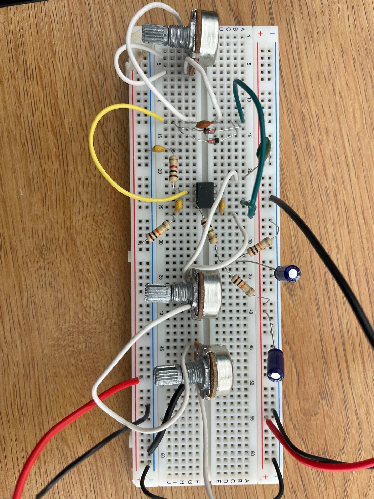

This is my first big project, and it really helped me to understand how guitars work and how the guitar signal gets processed. It helped me understand the basics of operational amplifiers, logarithmic vs linear potentiometers, how mono jacks work, and furthered my understanding of capacitors.
The first time I assembled it the input signal wasn't getting sent through the output jack. I troubleshooted by attaching the input and output jacks and by double checking the schematics and wiring. In the end the operational amplifier was a dual op amp meaning it had 2 outputs after connecting it to the right output the pedal worked perfectly.

Overdrive guitar pedal circuit